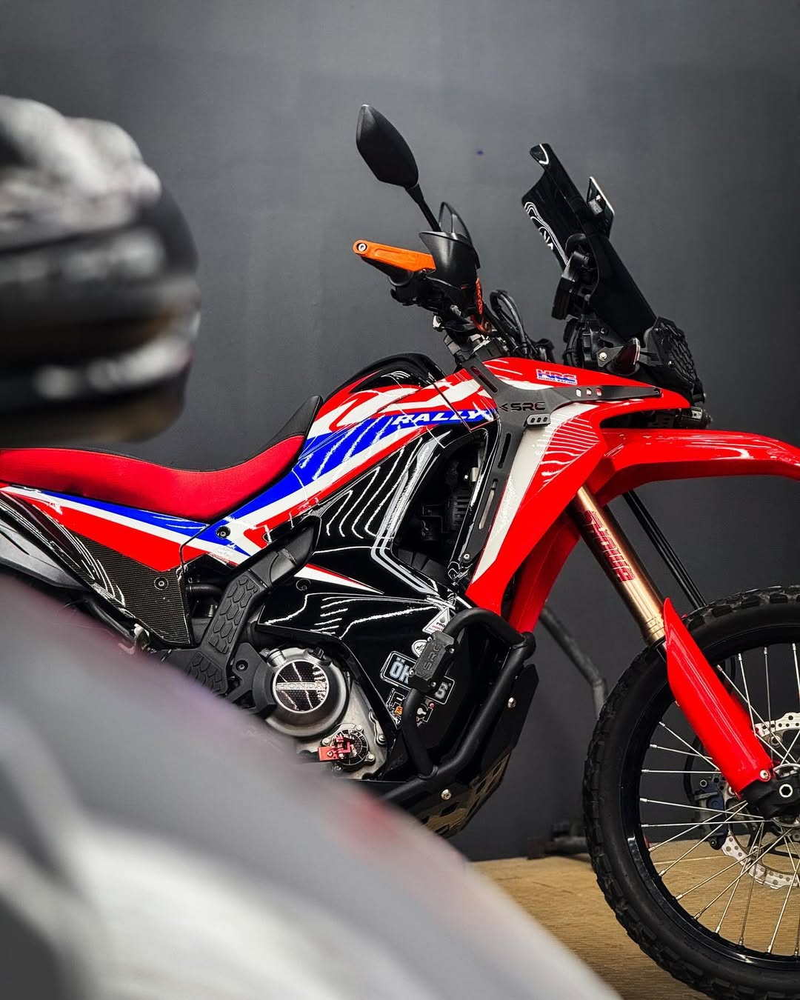

Cleaning to Perfection-BIGWASH
Why Choose Big Wash?
At Big Wash, we go beyond just cleaning—we care for your bike like it's our own.
✅ Detail-Oriented Cleaning – From rims to engine covers, we don’t miss a spot.
✅ Quality Products – We use premium, bike-safe cleaners and polish for a lasting shine.
✅ Fast & Friendly Service – Ride in, relax, and roll out fresh in no time.
✅ Affordable Rates – Top-notch service that won’t break the bank.
✅ Locally Owned, Rider-Run – We know bikes because we ride too.
Whether you ride daily or just on weekends, your bike deserves the best—and that’s exactly what we deliver.

Coating Features
IMPROVES SURFACE STRENGTH
Protects the ceramic coated surface from degradation while preserving the results of a perfect paint correction.
The ceramic coating increases the surface's resistance against scratches, marring and dullness.
GLASS LIKE FINISH
Our ceramic coating is formulated with a high solid formulation of the purest raw material creating a layer of
glass-like coating on the surface resulting in a stunning gloss finish.
SELF CLEANING EFFECT
Our ceramic coatings are water repellent, which means they give super hydrophobic effect after application.
You don't have to worry about acid rain or rainy weather anymore because nano particles makes your car paint water repellent.
SAFER FOR USER & ENVIRONMENT
There is no foul odour as it's carrier is a harmless mixture of non-carcinogenic low volatile solvent synthesised using nanotechnology.